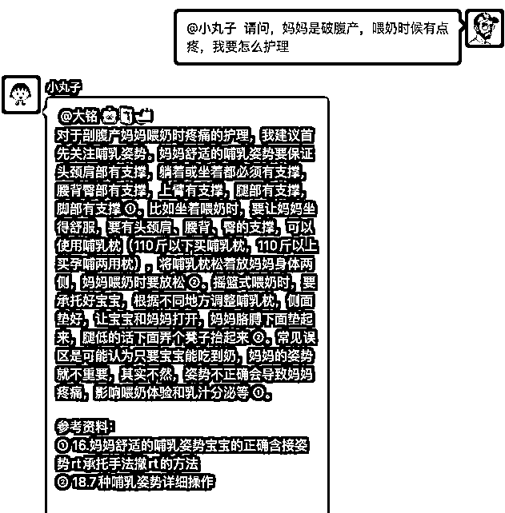
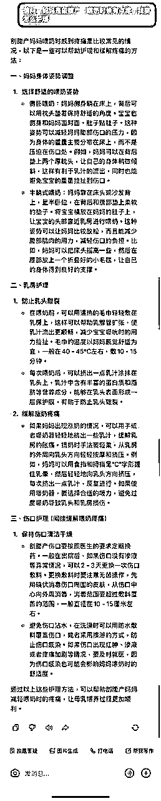
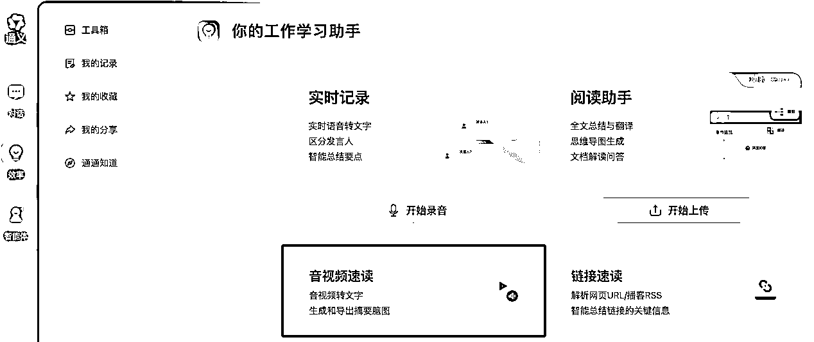
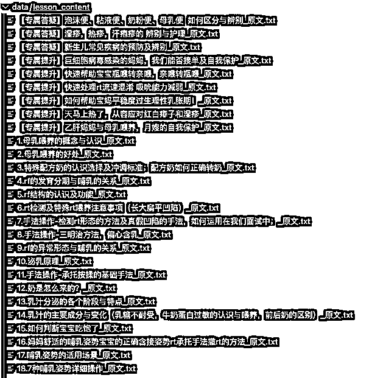
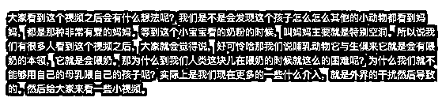
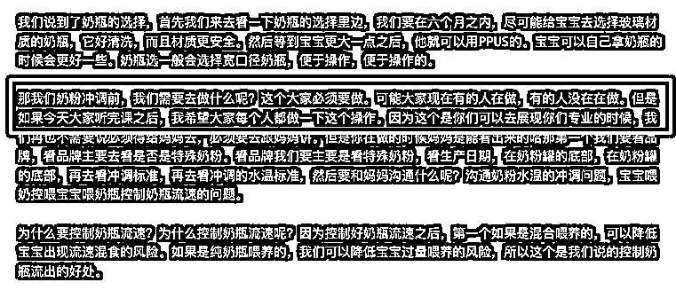
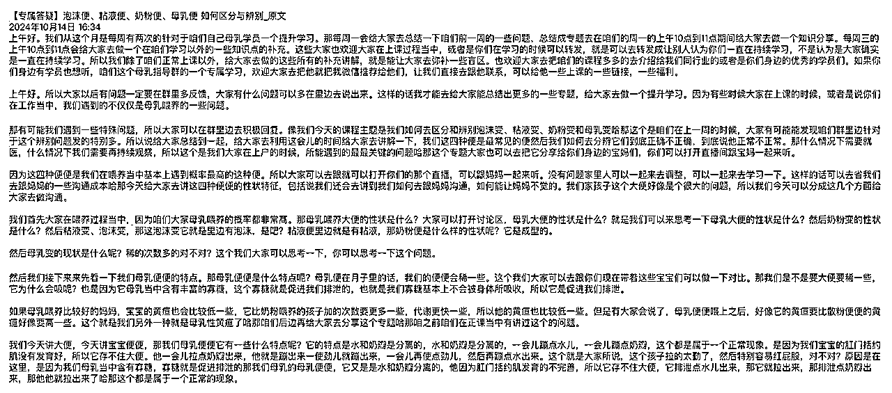

来源：https://rxas35pmvn.feishu.cn/docx/M7jWdHvehoC8zuxt0Gic3WyynWf
本文以制作这个私有知识库的机器人的思考过程，以及遇到不同问题的判断和架构设计为主。提供给代价的是一个构建的思考过程
不会涉及到很多代码的东西，因为有了一个更好的架构设计，写代码真的就是一个体力劳动了。
对于大量的 IP、个人等，自己有一定的技能或者是内容，放大的模式可以尝试
AI + 私有运营方法 SOP + 私有内容
在上面的案例，在月嫂这个人群，群运营的方式不难，是月嫂更多的一个咨询的群。核心是私有数据，之前这样的数据是无法快速定位，无法快速、结合不同方面、从不同内容中找到答案从而解决问题，现在是可以的
以 国际认证泌乳顾问 IBCLC 培训课程为例。 整体 SOP 流程如下
请问，妈妈是破腹产，喂奶时候有点疼，我要怎么护理
用自己得知识库

问豆包

课程都在小鹅通，可以下载成为本地文件。
转录工具的选择

我选择了转录功能，通过下载原文保存为 txt 文件，得到所有的原始内容

因为是使用直播转录播课程，所以内容噪音非常多，比如《泌乳原理》这节课，会有这样的内容

这段内容的信息含量非常低
也会有类似这样的内容，《如何控制奶瓶流速》

因为内容存在噪音，所以在 RAG 对原始内容进行向量化的时候，就会出现每段切分的内容快 ContentChunk 内容含量低，有干扰，结果就是在查询命中时候命中准确率低。简单说就是影响效果。
所以要对内容进行清洗，在对比了几种方式之后，最后还是选择使用大模型 LLM 对内容进行清洗。做一个清洗的提示词，考虑到上下文 token 限制，分段对内容进行清洗。
上面的标红的这个段落会被清洗为
奶粉冲调前，要看品牌，是否是特殊奶粉，看生产日期在奶粉罐底部，再看冲调标准、水温标准，要和妈妈沟通奶粉水温冲调及宝宝喂奶瓶控制奶瓶流速的问题。
清洗后的内容也无法直接使用，因为还是很长，需要对内容进行切分，切分后再向量化。
切分的方式我测试了很多，其实使用以段落为单位的滑动窗口方式就可以了。 Coze 上知识库的管理，有这个的直观的可视化的呈现

切分后就可以使用向量处理然后留存即可，向量化可以使用
pgsql + pgvector 最好用
没必要使用向量数据库，因为如果结合数据库的其他字段进行查询，pgsql + pgvector 这个方式是最好用的，而且性能、技术社群支持等也做的非常好
使用 RAG 的方式进行命中，其实就是把问题向量化，然后再已经向量化的内容中进行相似度查询，这部分并不难。
有一个注意点，就是不要直接进行向量化，先对原始问题进行一次处理，去拆分子问题。
原始问题
孩子出生 5 天，吃的少，体重下降，妈妈很担心，我该怎么办
拆分的子问题
针对这两个子问题进行向量化查询，效果会更好
略，这部分其实不难，就是标准的数据库查询和内容组合。就是注意别超过大模型的对话上下文就行
结合微信机器人的工具有很多，这里我不对工具进行太多的说明了。大家可以自己去选择
具体的细节大家可以看 9 月的 Coze 航海。
我在这里主要是给大家分享一下结合微信机器人的架构设计
微信官方的合规合法的限制之外，还有一些。
使用 windows 的机器运行微信，以及和微信配合的程序，比如 hook 注入之类的。这里可以的选择是一个云 windows 服务器，或者是一个本机的服务器。
如果使用本机的服务器，则没有对外的访问 IP 地址，也就意味着如果单独拆分业务应用在公网上，就无法和这个 windows 进行双向直接通讯。同时很多的服务器的软件可能在 Linux 上工作的更好，甚至仅有 Linux 的版本。操作系统的异构也是一个问题。
我的选择是，让微信机器人成为一个信息上传和下发的管道，不做任何业务处理。在机器人这边的 windows 上启动一个 pub/sub 服务。注册业务服务（含公网 IP）到机器人服务上，主要注册两个接口
在这种架构下，可以更加方便的管理
可能借 ChatPAN.ai 的尸还魂吧。做一个开源 + 商业的版本
毕竟发现好像很多地方都要用这个功能